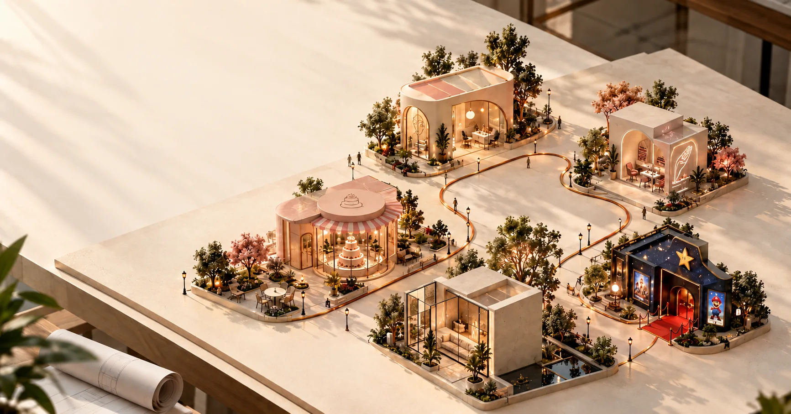
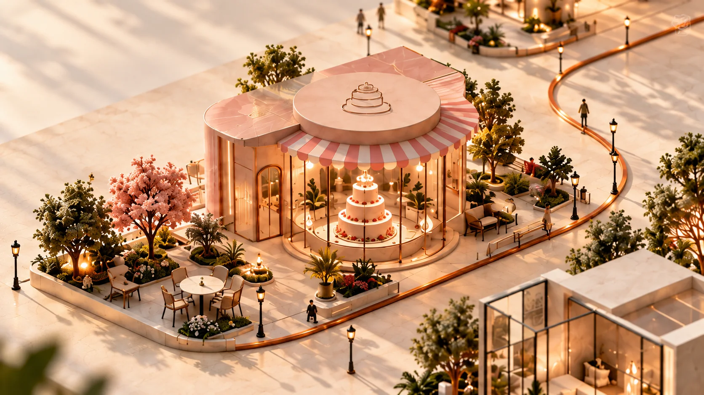
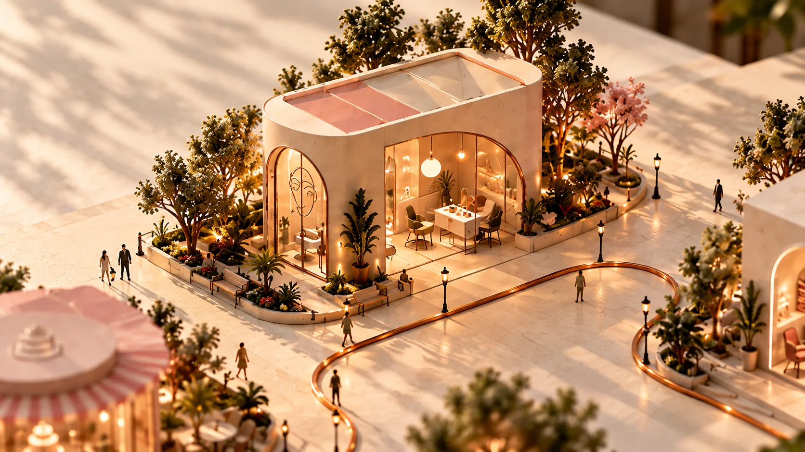
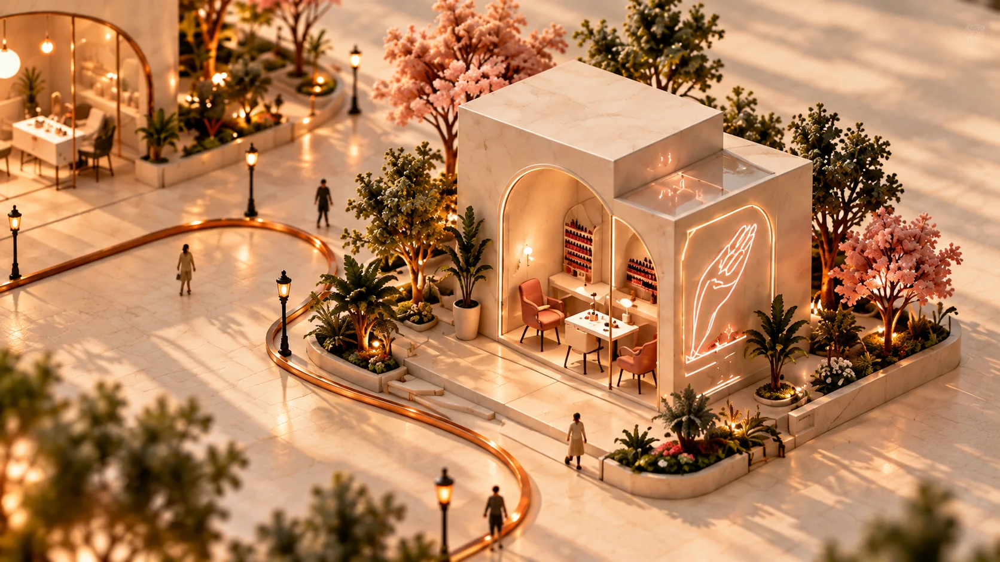
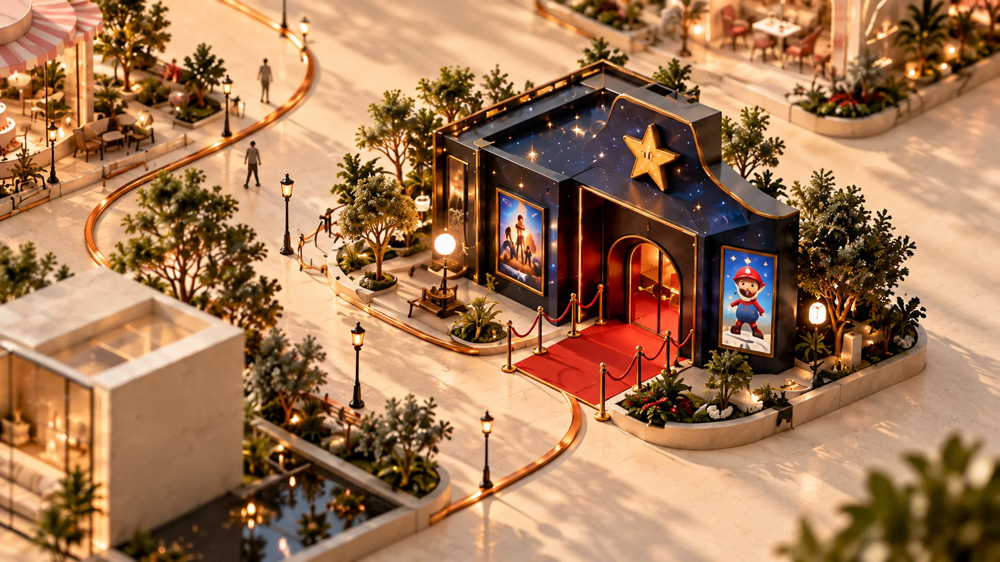
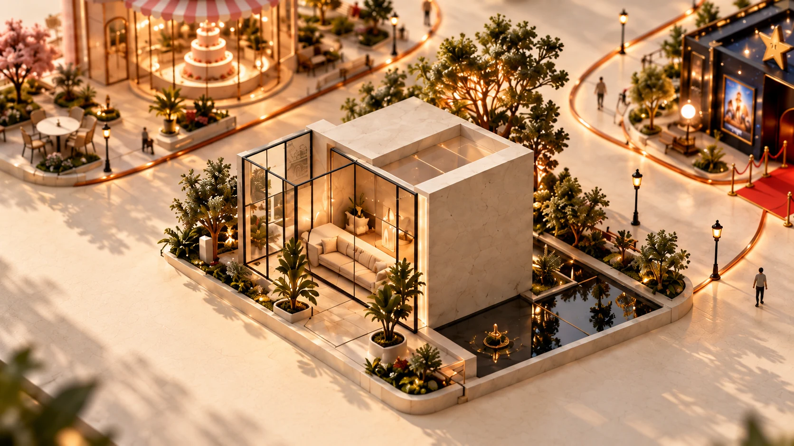

NOIR DISTRICT
Vitrine de moda com coleções, catálogo filtrável e consulta de produtos. A composição editorial apresenta a identidade de uma marca fictícia.
- Catálogo filtrável
- Direção editorial
- Coleções

Sou Gabriel Saraiva. Desenvolvo sites e landing pages que conectam identidade visual, navegação e contato com o seu negócio.
Conversar no WhatsApp Explorar os 4 projetos ↓
Uma vitrine acolhedora para criações feitas à mão.
Ver projeto : Cakes’MA Confeitaria — abre em nova aba
Beleza, cuidado e um convite para agendar.
Ver projeto : Beauty Studio — abre em nova aba
Delicadeza e personalidade em cada detalhe.
Ver projeto : Ana NailDesigner — abre em nova aba
Uma experiência visual em um universo de fantasia.
Projeto conceitual, sem vínculo com a Nintendo.Ver projeto : Super Mario Galaxy — abre em nova aba
Arquitetura, matéria e luz em harmonia.
Ver projeto : Studio Aura — abre em nova abaVamos criar uma landing page com a identidade do seu negócio.
Pedir orçamento gabrielsaraiva587@gmail.comConheça quatro projetos de moda, estética automotiva, odontologia e floricultura.
Projetos demonstrativos e conceituais desenvolvidos para portfólio. Não representam, necessariamente, empresas em operação ou trabalhos contratados.
Vitrine de moda com coleções, catálogo filtrável e consulta de produtos. A composição editorial apresenta a identidade de uma marca fictícia.
Modelo para apresentar serviços de limpeza, proteção e acabamento. Inclui guia de cuidados e simulação de orçamento, sem envio de mensagens.
Conceito odontológico com tratamentos, equipe ilustrativa e galeria de ambientes. Uma apresentação em tons claros, com interações para explorar os conteúdos.
Vitrine floral com coleções, produtos e ocasiões especiais. A narrativa ao rolar a página e a composição em camadas 2.5D convidam a explorar os arranjos.
Entendo seus objetivos, seu público e o que torna seu negócio único.
Crio a estrutura, o visual e a organização dos conteúdos da sua página.
Transformo a proposta em uma página responsiva, pronta para publicar.
Seu visitante precisa entender o que você oferece e encontrar o próximo passo. É essa conexão que orienta meu trabalho.
Uma identidade visual coerente com seu negócio, seu público e sua mensagem.
Conteúdo organizado para uma boa navegação no computador e no celular.
Chamadas claras que conduzem ao WhatsApp, ao orçamento ou ao seu objetivo.
Desenvolvedor Front-End · São Paulo, SP
Sou desenvolvedor front-end com foco em sites e landing pages para negócios. Trabalho com HTML, CSS e JavaScript, unindo organização de conteúdo, identidade visual e atenção à experiência de quem navega.
Minha experiência anterior em assistência técnica e atendimento contribui para uma comunicação próxima e para entender o que cada projeto precisa. Sigo ampliando meus conhecimentos em React, Next.js e TypeScript.
Código no GitHubPerfil no LinkedIn ↗Aberto a projetos freelance e oportunidades como desenvolvedor front-end júnior.
Quer apresentar seu negócio ou conversar sobre uma oportunidade profissional? Fale comigo pelo WhatsApp, e-mail ou LinkedIn.
gabrielsaraiva587@gmail.com(11) 93484-8849O valor depende do escopo, do conteúdo e das interações. Me conte sua ideia para receber uma proposta adequada ao seu projeto.
Podemos partir do material que você já tem. Na conversa inicial, alinhamos os conteúdos necessários e o que precisa ser preparado.
Sim. A adaptação para telas menores faz parte do desenvolvimento, com atenção à leitura, navegação e botões de contato.
Definimos o cronograma e as etapas de aprovação na proposta. Também alinhamos domínio, hospedagem e os acessos necessários para publicar.